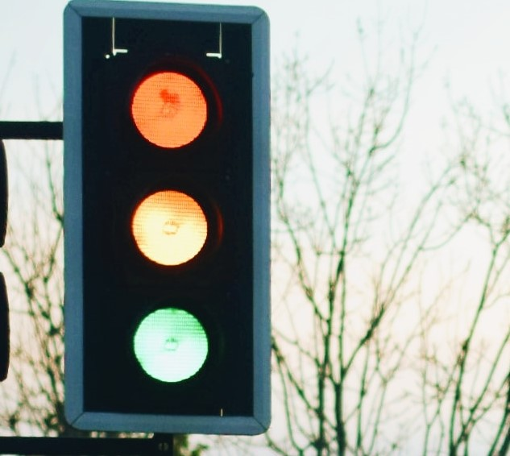

Analysis of Domestic Flights Delays in the United States
Identified and quantified the impact of various factors like length of the flight, weekends versus weekdays, and popular airlines or less popular airlines on flight delays. Used IBM SPSS to make inferences and Tableau for visualizations.

Contact Management-Python
This is a contact management website which is created in VScode (Python, html) and hosted on Git. In this Django project CRUD (create, read, update, and delete) operations are performed to manage the contacts. Data is stored in the Django built-in SQLite database.

Call Centre Trends - Power BI
Created a well-designed Power BI dashboard project. Visualized crucial KPIs, including overall customer satisfaction, calls answered/abandoned, average speed of answer, and agent performance metrics.
Customer Retention - Analytics
Developed a comprehensive dashboard highlighting key performance indicators (KPIs) for customer retention, demonstrating expertise in data visualization and quantitative analysis. Successfully addressed telecom industry challenges by visualizing customer demographics and insights, providing actionable insights for proactive retention strategies.

Type 2 Diabetes Prediction Using LightGBM
For my final year project, I chose to work on Type - 2 Diabetes with a team of three more, as one of my friends suffered from it. Because Diabetes is associated with a slew of issues, early detection is critical in diagnosing the condition. For the categorization of the Pima Indians Dataset, my team employed the LightGBM, which is a gradient-boosting algorithm. On the same dataset, we used the Support vector machine and random forest techniques to compare the performance of LightGBM. . This dataset is further preprocessed so that the dataset can be used efficiently to predict the outcomes of the disease. Python’s sklearn library was used for splitting the dataset in training and testing parts. We successfully created a program where LightGBM showed the highest accuracy of 0.9062. Our work was published in the International Journal of Future Generation Communication and Networking in 2020.

Smart Traffic Surveillance System
Speaking of “Smart Traffic Surveillance System” implemented Computer Vision to develop a system that determined the number of vehicles in a lane so that signal waiting time may be appropriately allocated. This system can assist road authorities in efficiently monitoring traffic. I used Digital Image Processing to get the number of vehicles in a lane. The image captured by camera was converted to grey image using ctvColor function. Impurities in this grey image were removed by using dilute and erode operations a number of times. After this thresholding operation was applied to check and consider the identified objects as vehicles or not. After this I used findcontour function from OpenCV to extract the contours from the image. The number of vehicles was identified and waiting time for that lane was allocated accordingly. This project kickstarted my foreseeable career in Computer Vision. After these projects, I felt quite confident, but I knew that I had barely started scratching the surface.
Road Lane Line Detection Using Computer Vision
The lessons I learned from my previous project compelled me to focus more on enhancing road safety in self-driving cars. So I seized the opportunity to develop a standalone project, “Road Lane Line Detection Using Computer Vision,” where I detected the lanes on roads for safe driving of autonomous vehicles. It includes tasks such as edge detection, image segmentation and image classification. I used image processing library ‘OpenCV’. I used various morphological operations such dilation, opening and masking. The end application of the project can serve as preliminary mechanism for the detection of well-defined path on the road for the self-driving car system. In addition, I used computer vision to study patterns. It was an enriching experience as it trained me to be self-disciplined, work under pressure, and form effective decisions.